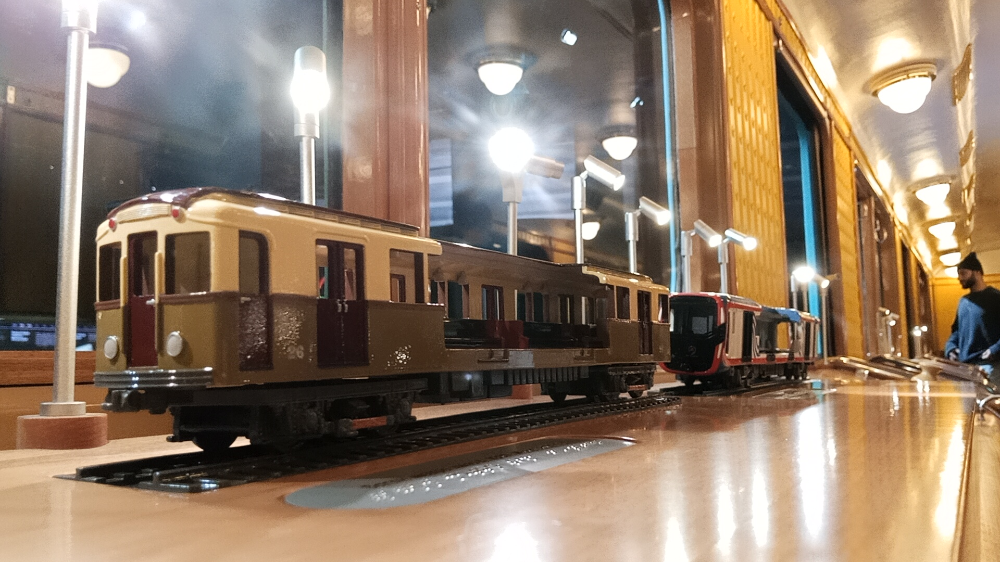
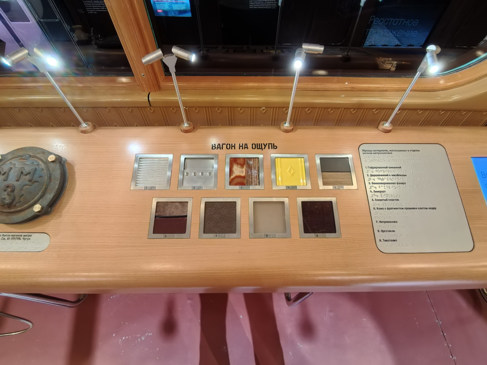
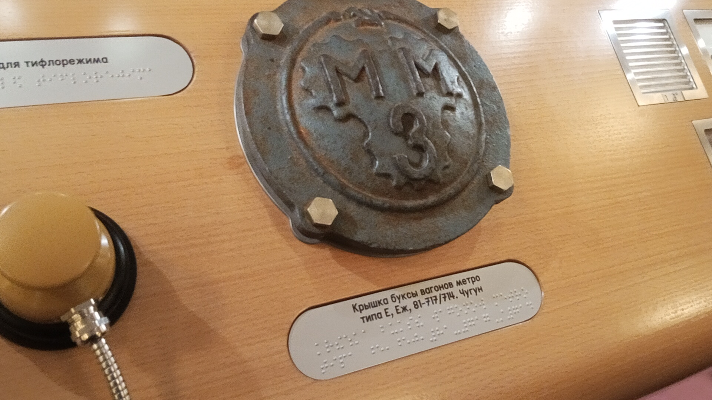
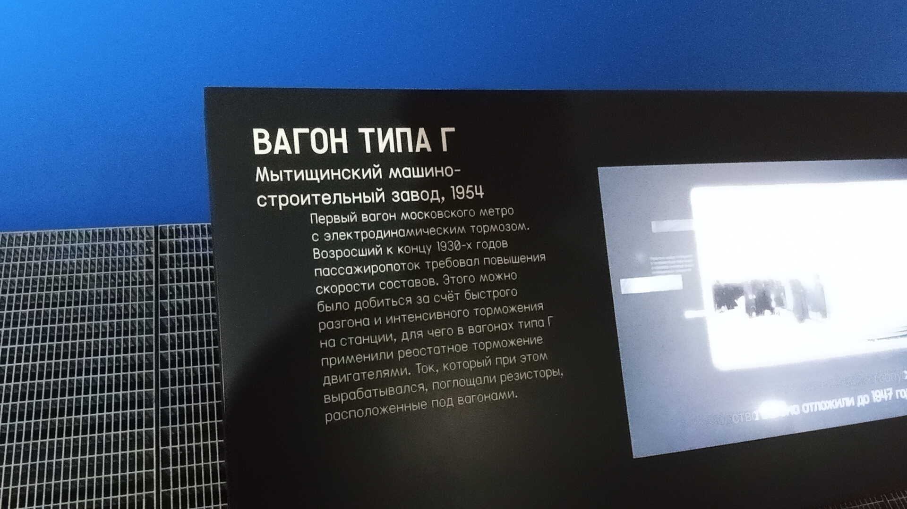
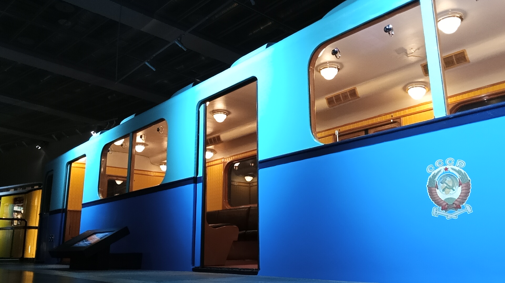
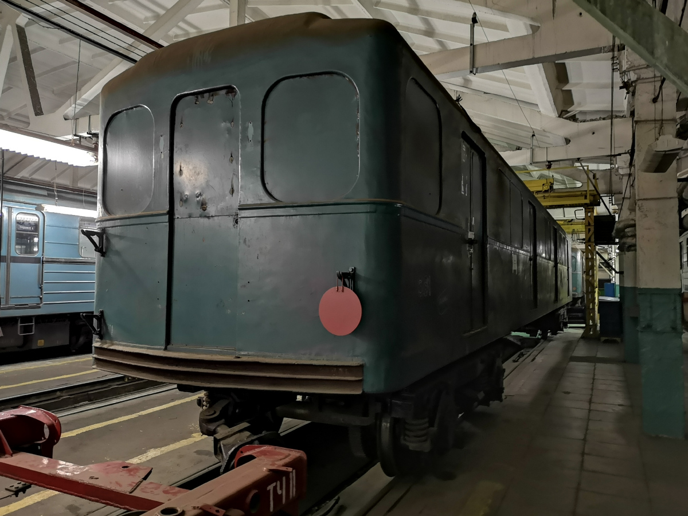

Вагон типа Г № 661
Вагон типа Г № 661 — один из старейших сохранившихся вагонов Московского метрополитена. Построенный в октябре 1954 года, он проработал почти три десятилетия, после чего был превращен в бытовку, а затем спасён и отреставрирован для Музея Транспорта Москвы.
Основные данные
| Модель | Г |
| Номер | 661 |
| Год постройки | 10.1954 |
| Город | Москва 🇷🇺 |
| Текущее состояние | Не эксплуатируется |
| Назначение | Музейный |
| Депо/Парк | Музей транспорта Москвы |
История
Постройка и начало службы
Вагон построен и поступил в депо «Сокол».
Перевод в «Измайлово»
Вагон передан в депо ТЧ-3 «Измайлово».
Перевод в «Калужское»
Вагон переведён в депо ТЧ-5 «Калужское».
Списание с баланса
Вагон списан с баланса метрополитена.
Бытовка в «Выхино»
Долгие годы использовался в качестве бытовки в депо ТЧ-11 «Выхино».
Реставрация
Проходил восстановление на ВРК «Выхино».
Передача в музей
Вагон доставлен в Музей транспорта Москвы.
Элементы экспозиции в салоне
Внутри вагона Г № 661 в Музее Транспорта Москвы организована специальная интерактивная экспозиция. Она позволяет посетителям не только увидеть исторический вагон, но и буквально прикоснуться к его истории.

Макеты поездов
В салоне установлены два макета подвижного состава — вагон типа А №21 и вагона «Москва-2020».
📸 pfandrom

Стенд «Вагон на ощупь»
Интерактивный стенд с образцами материалов отделки, которые использовались в метровагонах.
📸 Метро на даче

Крышка буксы «ММЗ»
Оригинальная чугунная крышка буксы с клеймом Мытищинского машиностроительного завода. Такие детали — важная часть материальной культуры и истории завода.
📸 pfandrom
Фотогалерея

Общий вид в музее.

Внутреннее убранство.

Музейная информация.
Макеты поездов в салоне.
Интерактивная экспозиция.

На вагон Г №661.

До реставрации.
Нажмите на фото для увеличения